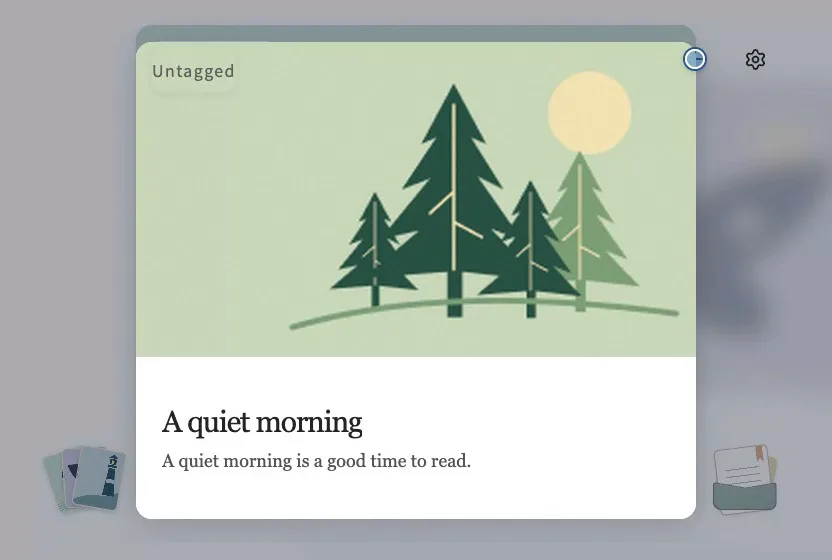
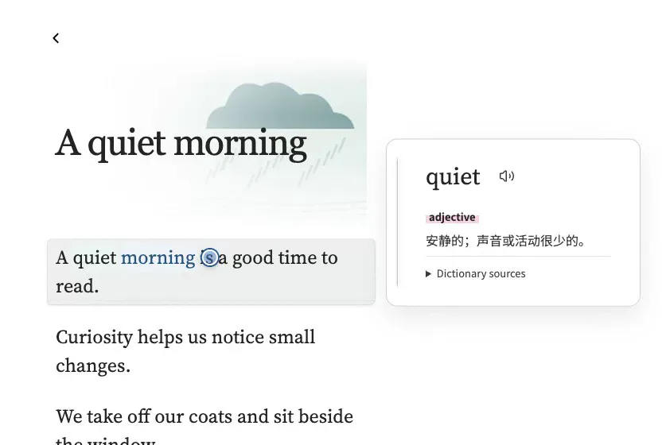
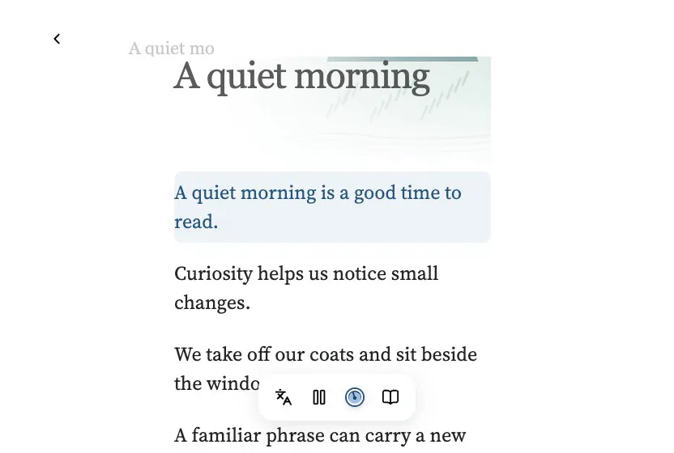
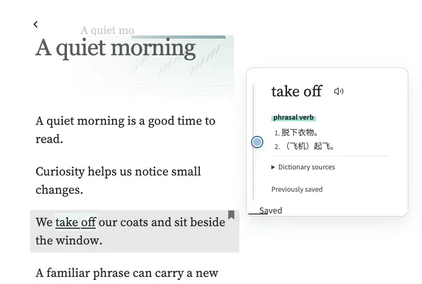
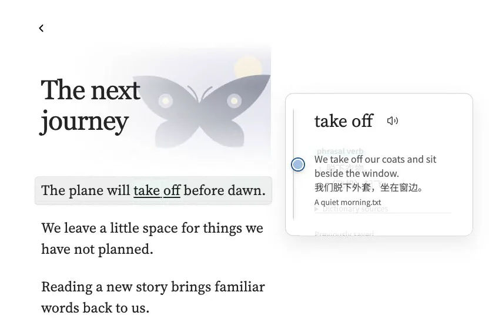

LexiCue / English reading
Read the word.Keep the context.
Bring something you want to read. Look up a word and keep the sentence where you first found it.
Bring a passage of your own.

Select quiet. Read its meaning.

Hear the whole sentence.

Keep the phrase with its sentence.

Meet it again. Find the first sentence.

Read a passage yourself.
Open a sample and select an English word to see what it means in context.
Download the notarized macOS v0.4.7 DMG for Apple Silicon or Intel. Windows and Android downloads are available in v0.4.5.